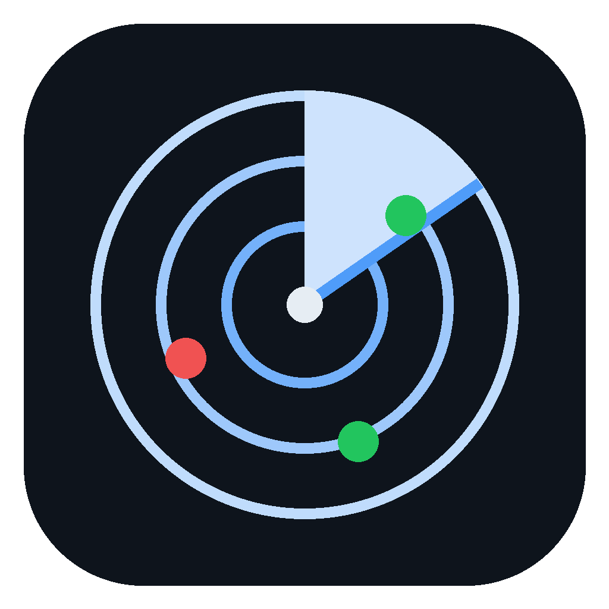

Market RadarTerms of Service
Last updated November 24, 2026
These terms cover your use of the Market Radar desktop app, this website and the Market Radar Pro subscription ("Market Radar", "we", "us"). By downloading the app or buying Pro you agree to them. If you don't agree, please don't use Market Radar.
1. What Market Radar does
The app reads publicly available news and market data, scores it with published research rules, and shows signals, trade ideas, charts, a practice (simulated) trading account and, if you connect one, access to your own brokerage account. Signals and ideas are produced automatically by software, can be wrong, late or based on incomplete data, and are not reviewed by a person before you see them.
2. Your use of the app
- You must be old enough to form a binding contract where you live, and old enough to hold a brokerage account if you connect one.
- Use Market Radar only for your own personal use and in line with the law where you live.
- Don't copy, resell, reverse-engineer, or redistribute the app or its paid features, or share your license key.
- Market data and news come from third parties and may have their own terms. Don't use Market Radar to redistribute that data.
3. Market Radar Pro
- Pro is a subscription sold through Gumroad, which processes payments and sends your receipt and license key. Prices are shown on the pricing section before you pay and may change for future billing periods; we'll tell existing subscribers before a price change applies to them.
- Your subscription renews automatically each month or year until you cancel. You can cancel at any time from the link in your Gumroad receipt or with the Manage subscription button in the app. Pro stays active until the end of the period you've paid for.
- Refunds: if Pro doesn't work for you, contact us within 14 days of your first payment and we'll refund it. Renewals and later payments aren't refundable unless the law where you live requires it.
- Your license key is for you. We may disable a key that is shared publicly, used for fraud, or refunded or charged back.
4. Connecting a brokerage account
Real trading works only through a brokerage account you open yourself with Alpaca. Alpaca, not Market Radar, is your broker: it holds your money and securities, executes and settles your orders, and its own customer agreement applies. Market Radar only sends the orders you place and confirm in the app to Alpaca using API keys you provide. We never hold your money, can't move money in or out of your account, and don't place orders on our own. You are responsible for every order sent from your account, for keeping your API keys secret, and for checking your account at Alpaca.
5. Practice trading
The simulated account uses fake money and models fills with simplified rules. Practice results don't show what would have happened with real orders.
6. Availability and changes
Market Radar depends on outside data sources, the internet and services we don't control. We don't promise it will always be available, complete, accurate, on time or free of errors. We may change, add or remove features, and the app updates itself automatically.
7. No warranty
Market Radar is provided "as is" and "as available", without warranties of any kind, to the fullest extent the law allows, including warranties of accuracy, fitness for a particular purpose and non-infringement.
8. Limitation of liability
To the fullest extent the law allows, Market Radar is not liable for any trading or investment losses, lost profits, or indirect or consequential damages arising from your use of the app, its signals, its data, a brokerage connection, or any outage or error. Our total liability for any claim is limited to the amount you paid for Pro in the 12 months before the claim. Some places don't allow these limits, so they may not all apply to you.
9. Ending your use
You can stop using Market Radar at any time. We may suspend or end access to Pro if you break these terms. Sections 7 and 8 continue to apply after that.
10. Changes to these terms
We may update these terms. The date at the top shows the latest version. If a change is significant, we'll say so in the app or by email before it takes effect.
11. Contact
Questions, refunds or problems: reply to your Gumroad receipt email, or use the contact option on the Market Radar Pro page.